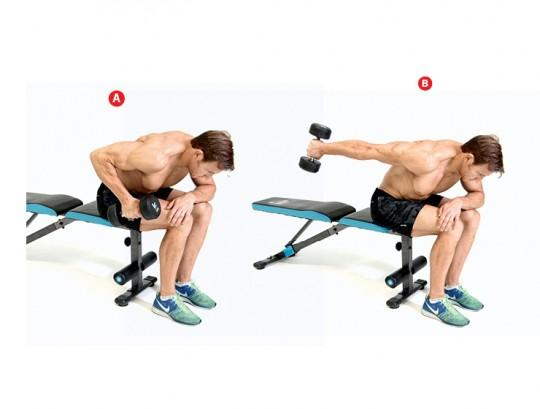
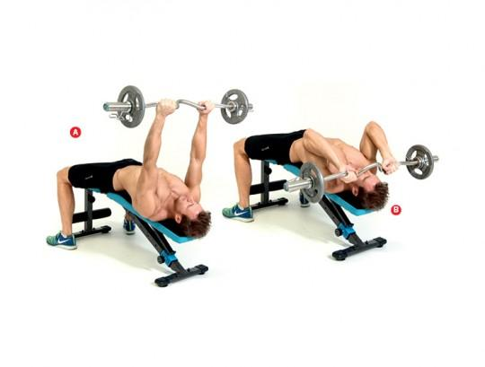
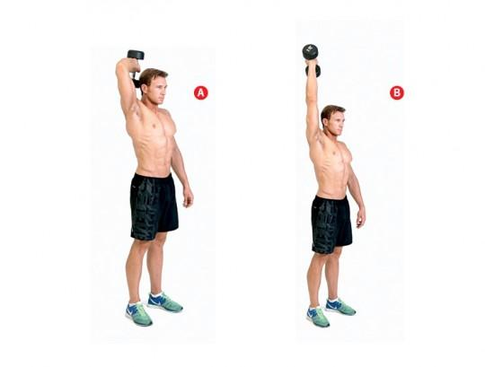

Mięsień zajmujący około 2/3 objętości naszego ramienia. Jest złożony z 3 głów: bocznej, długiej oraz przyśrodkowej. Głównym zadaniem mięśnia jest wyprost w stawie łokciowym, a więc każde ćwiczenie, w którym go wykonujemy, będzie angażować nasze tricepsy.
Do najpopularniejszych ćwiczeń zaliczamy pompki na poręczach, czyli ćwiczenie z ciężarem własnego ciała, oraz wyciskanie francuskie, które przeważnie wykonujemy przy pomocy sztangi łamanej lub hantli.
Złap hantlę prawą ręką i usiądź na brzegu ławki. Pochyl się do przodu, lewą rękę ułóż na kolanach. Hantlę trzymaj w ugiętej w łokciu ręce (A). Dynamicznym ruchem wyprostuj rękę, hantlę przenosząc do tyłu (B). Powtórzenie zakończ mocnym napięciem tricepsa. Wróć do pozycji startowej. Po 10-12 repetach zrób to samo na drugą rękę.
Ustaw ławkę na skos ujemny. Złap sztangę łamaną i połóż się tyłem na ławce. Ręce trzymaj proste w łokciach, sztanga powinna znajdować się bezpośrednio nad barkami (A). Zginając ręce w łokciach, obniż gryf do czoła (bądź ostrożny!) (B) i dynamicznym ruchem wróć do pozycji początkowej. Kontynuuj.
Złap hantlę prawą ręką i stań prosto w lekkim rozkroku. Ściągnij łopatki, unieś hantlę nad głowę i ugnij rękę w łokciu, jak na zdjęciu (A). Dynamicznym ruchem wyprostuj rękę, mocno napinając triceps (B). Bardzo powoli, licząc nawet do 5, opuść hantlę do pozycji początkowej. Powtarzaj, pamiętając, aby ruch w górę robić zawsze maksymalnie dynamicznie.
Autor strony: 0000000000